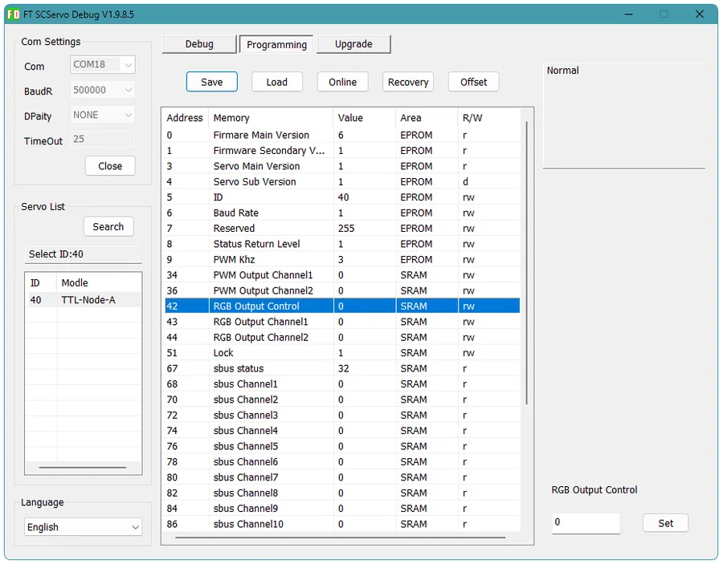

S.BUS Receiver Input
Read channel data from an RC receiver and route it into the robot control system. It is useful for remote-controlled mobile bases, arms, teaching platforms, and test rigs.
RC control becomes bus dataTTL MULTIFUNCTION NODE
TTL Node (A) is a compact utility node for robot systems. It combines USB-to-TTL bus access, S.BUS receiver input, PWM power outputs, and RGB LED control, so small peripherals can be managed through the same TTL bus as the rest of the robot.

WHAT IT DOES
Many robots need more than motors and joints. They also need RC input, status indicators, small output channels, and a reliable setup path. TTL Node (A) gathers those common functions into one board, reducing scattered adapters and one-off wiring.
Read channel data from an RC receiver and route it into the robot control system. It is useful for remote-controlled mobile bases, arms, teaching platforms, and test rigs.
RC control becomes bus dataConnect from a PC, Raspberry Pi, Jetson, RK board, or similar controller through USB Type-C. Search devices, set IDs, test functions, and read status without extra wiring.
Fast to bring upTwo PWM-controlled DC outputs can drive small loads such as fill lights, electromagnets, solenoid valves, fans, or other simple actuators.
More useful outputs on the busControl two RGB LED channels from the TTL bus. Use color to show mode, warnings, task state, or user feedback without consuming extra controller IO.
Robot status becomes visibleINTERFACE DETAIL


BUS INTEGRATION
TTL Node (A) can be controlled directly through USB, or it can join a LYGION TTL bus together with stepper drivers, encoders, servos, and other devices. For embedded controllers, it can also be connected through TTL Adapter (A)'s UART path.
FD SOFTWARE
FD software lets you search for the device, change its ID, check status, read inputs, and test outputs. That makes the first setup much easier: confirm the board works, then move the same functions into your own program.
Check that the device is online, confirm its ID, and then test S.BUS, PWM, and RGB functions separately. Once each piece is stable, integrate it with Python, C++, Arduino, or your embedded control stack.

APPLICATIONS
TTL Node (A) turns small robot-side functions into a manageable bus device. It is especially helpful when you want fewer loose wires and a cleaner control architecture.


SPECIFICATIONS

PACKAGE
DOCUMENTATION
Use the Wiki for wiring, FD configuration, SDK examples, and mechanical files. The product page gives the overview; the Wiki carries the implementation details.